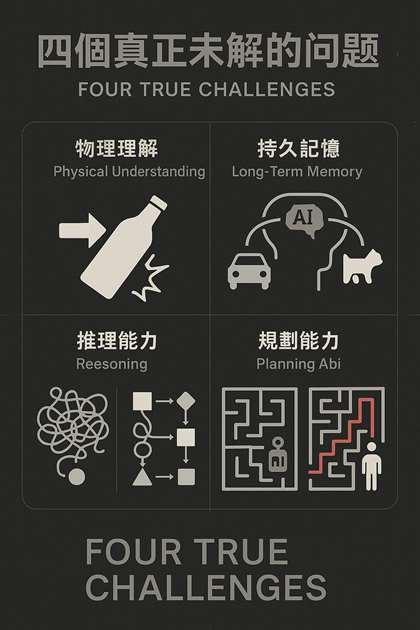

如何加速整體人類社群在人工智慧領域的進展，朝「類人智能（Human-like Intelligence）」邁進。
當我們審視人工智能的發展歷程，特別是近年來大型語言模型的爆發式成長，不難發現AI在某些方面已經展現了令人驚嘆的能力。然而，在追求真正的類人智能的道路上，仍然存在一些根本性的挑戰。這些挑戰不僅僅是技術實現上的難點，更是關乎AI是否能夠真正理解世界、記憶經歷、推理思考並實現目標的核心問題。
儘管當前AI技術已經取得了顯著進步，但要實現真正的類人智能，我們仍需突破物理理解、持久記憶、推理能力和規劃能力這四大核心挑戰。這些挑戰代表了人類智能的獨特特質，也是未來AI發展的關鍵突破點。
人類從嬰兒時期開始，就通過感知和交互來建立對物理世界的直覺理解。我們理解重力、摩擦力、物體的永久性、空間關係等物理概念，這些都是我們與世界互動的基礎。相比之下，即使是最先進的AI系統也缺乏這種深層次的物理理解。
物理理解不僅僅是知道物理公式或能夠描述物理現象，它還包括：
一個看似簡單的任務——抓起一杯滿水的杯子——對人類來說極為自然，但對AI系統卻是巨大挑戰。人類直覺理解水會溢出、玻璃會碎、抓握力度需適中等因素，並自然地調整動作。AI需要明確的程序或大量訓練數據才能學習這些"常識"，而且往往無法泛化到新情況。
例如2025年宇樹人形機器人全球首次完成側空翻動作及眾擎科技人形機器人全球首次完成前空翻動作，這是物理因果理解 + 動作控制協同「初階物理直覺」
MCP可以在物理理解挑戰中發揮作用，通過允許不同專精於物理世界不同方面的AI系統共享它們的"理解"，從而逐步建立更全面的物理世界模型。但真正的突破可能需要結合實體交互、多模態感知和新型的知識表示方法。
人類不僅能夠儲存大量記憶，更重要的是能夠根據相關性、情境和重要性來組織、更新和檢索這些記憶。而目前的AI系統雖然能夠處理大量資料，但在建立連貫、持久且能動態更新的記憶系統方面仍然面臨巨大挑戰。
持久記憶挑戰包括但不限於：
當今的對話AI系統通常被限制在單一對話或有限的上下文窗口中。即使是最先進的系統，也很難記住數周前的對話細節或將不同對話中的資訊聯繫起來。相比之下，人類可以輕鬆回憶多年前的對話，並將不同時間、地點獲得的資訊整合起來理解問題。
例如子曰：「溫故而知新，可以為師矣」。如果AI不能擁有長期記憶，就無法「成長」或「反思」。
MCP可以通過提供結構化的方式來共享和保留上下文資訊，部分緩解記憶問題。然而，真正解決持久記憶挑戰可能需要開發新型的記憶架構，結合神經網絡與符號記憶系統，以實現更人性化的記憶組織與提取機制。
推理是智能的核心特徵之一，包括從已知事實推導新結論、理解因果關係、進行抽象思考等能力。雖然當前的AI系統在某些特定領域的推理任務上表現出色，但其推理能力仍然缺乏人類推理的靈活性、適應性和創造性。
推理能力的挑戰包括：
在解決需要多步驟推理的科學問題時，人類專家能夠綜合運用領域知識、基本原理和直覺，找出解決路徑。儘管AI在特定領域的問題解決上取得了進展，但當問題需要跨領域知識整合或創新思路時，AI系統往往無法像人類那樣靈活思考，容易在推理鏈中出現錯誤或無法找到突破口。
例如空城計鳥盡弓藏兔死狗烹，「推理他人的推理」，也就是 心智遞迴（Recursive Theory of Mind Reasoning）。「心智理論式推理（Theory of Mind Reasoning）」
MCP可以通過將複雜推理任務分解為多個AI系統協作完成的步驟，并明確傳遞每一步的推理過程，來改善整體推理能力。未來突破可能來自於更好的推理方法，如將神經網絡與符號推理系統結合，或開發專門優化推理能力的AI架構。
規劃是指制定和執行多步驟行動以達成目標的能力，這需要預測行動的後果、適應變化的環境，並在遇到障礙時調整計劃。人類的規劃能力極為靈活，能夠處理高度不確定性和複雜情境，而AI系統在開放、動態環境中的規劃能力仍然有限。
規劃能力的挑戰包括：
在管理一個複雜項目（如軟件開發或活動策劃）時，人類能夠制定總體計劃，預見潛在問題，設置檢查點，並在執行過程中靈活調整。當前的AI系統可以協助特定任務規劃，但很難像人類項目經理那樣全面考慮各種因素、預測未來挑戰並保持策略靈活性，尤其是在處理高度不確定或快速變化的情境時。
例如AI如何可訓練出具備「長期目標導向」的「兵仙」韓信，規劃明修棧道、暗渡陳倉戰略。「無法像人類一樣制定一個明暗交錯、分層推進的策略靈活切換」
MCP可以通過促進不同專業AI系統間的協作，實現更加強大的規劃能力。例如，一個專注於創意思考的系統可以與一個專注於細節執行的系統協作，共同制定全面而實用的計劃。未來的發展可能借鑒認知科學、運籌學和人工智能規劃領域的最新進展，創造更具適應性和創造性的規劃系統。
